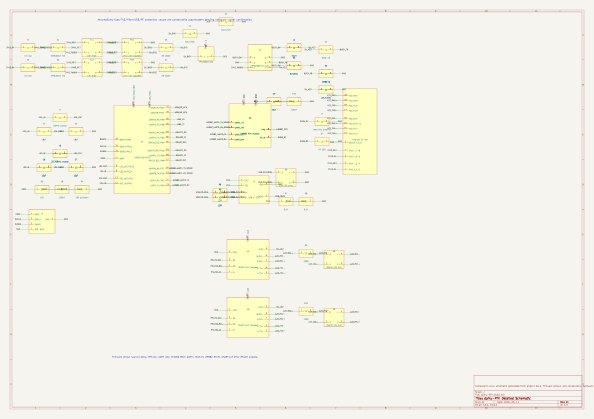

降低交付不确定性
缩短 bringup 周期，减少重复调试，降低对单个老工程师经验的依赖，每次交付都有可回放证据。

three audiences
缩短 bringup 周期，减少重复调试，降低对单个老工程师经验的依赖，每次交付都有可回放证据。
谁改了什么、编译是否通过、烧录是否成功、哪些串口命令测过、RTCM CRC 是否为 0，都能沉淀为 handoff 记录。
继续使用 HAL、FreeRTOS、CMake、CubeCLT 和串口调试习惯，只把 build-flash-test-debug-report 包成闭环。
workflow map
stage 01 / intake radar
cost & velocity
delivery economics
| 工作项 | 纯人工估算 | AI 工作流结果 |
|---|---|---|
| 固件任务/接口实现 | 5-8 人天 | AI 生成 + 人审 |
| 编译/烧录/环境脚本 | 2-4 人天 | 一条 baseline |
| 串口/RTCM 自动测试 | 4-6 人天 | 脚本化回归 |
| 文档/交付证据包 | 2-3 人天 | 自动归档 |
| 集成调试与修复 | 2-4 人天 | 分钟级闭环 |
注：估算不含硬件 BOM、打样、仪器和外协费用；人力成本按 ¥2,000 / 人天。
failure-to-fix cases
现象：编译和烧录通过，但串口通道无输出。
现象：RTCM 输出存在间歇性丢帧或尾字节异常。
现象：有输出但业务侧怀疑数据链路不可信。
现象：Windows 能看到 USB CDC 口，但 reset 后 Shell 偶发不可用。
roi model
commercial use cases
适合工控采集板、传感器网关、通信转发板、电机控制外设和飞控扩展模块。
CMake / SWD / serial shell / register probe / evidence package适合多版本固件维护、小批量产品迭代、客户现场 bug 修复和老项目工程化改造。
protocol tests / CRC parser / summary templates / artifact tracking适合 HardFault、UART 无输出、DMA idle-line、USB CDC 枚举失败和 watchdog reset loop。
failure capture / register targets / AI playbook / human checklist适合需要审查测试证明、外包固件交付、平台团队支撑产品团队的场景。
manifest / build log / flash log / functional log / handoff summary适合样机稀缺、硬件在实验室或测试同事电脑上的真实 bringup 场景。
remote command / bench PC / ST-LINK / serial gates / evidence pullback3-minute demo script
00:40 PS> tools/functional_test.ps1 -BuildPreset Debug -ComPort COM4
PASS CMake / Ninja build
PASS STM32CubeProgrammer flash + verify
PASS USB CDC shell command suite
PASS RTCM parser CRC BAD: 0
DONE evidence/public-showcase-baseline-2026-05-18/
手动编译、手动烧录、手动串口测试、问题记录缺失。
用 STM32F407 + UM982 展示 build-flash-test-debug-report 闭环。
展示编译、烧录、Shell 测试和 RTCM parser 连续执行。
展示 manifest、build log、flash log、RTCM CRC log 和 handoff report。
选 USART clock、RS422 DE、RTCM CRC 或 USB CDC reset 作为失败复盘。
修复后测试重新 PASS，工程师确认并归档。
real project inside
Demo 里的能力来自当前仓库：UM982 非阻塞初始化、RTCM 消息配置、DMA 透传、USB CDC 调试、Watchdog 保活和 Flash CRC 配置记录。
evidence loop
CMake、Ninja、Arm GCC、STM32CubeProgrammer 自动检查。
01_install_check.logDebug / Release preset 生成 ELF、HEX、BIN。
dpiny-RTK.elf/.hex/.binSWD 下载、校验、复位，有低速连接兜底路径。
03_flash.logShell 命令、配置保存、重启保持都能脚本化验证。
04_functional_test.log非法参数、边界值、未知命令不会污染配置。
05_input_validation.logRTCM3 帧、消息类型覆盖、CRC BAD 为 0。
06_rtcm_parse.logUSB CDC reset 前后 Shell 都要响应，修复不能只靠人工观察。
07_usb_cdc_reset.logpromotion angle